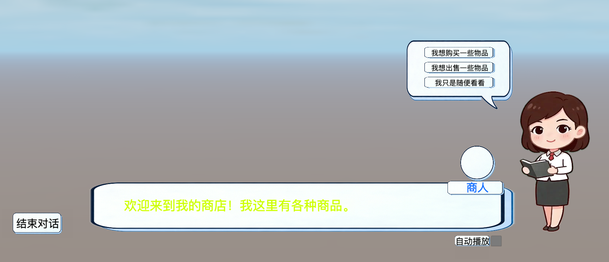
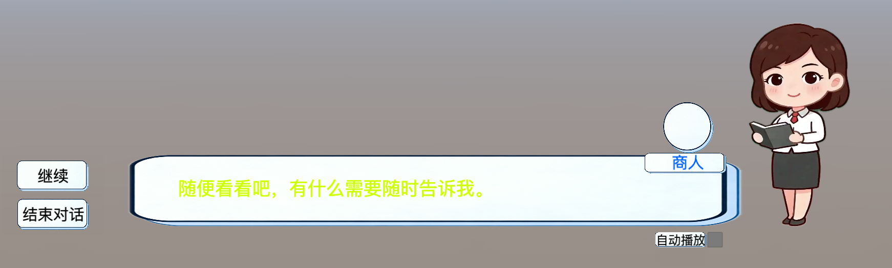

AI动态生成游戏多分支角色对话与动作反应
教学表现系统 | 2025/12-2026/02 | 对话图驱动与角色动作联动设计
系统概述
这个项目围绕 AI 动态生成对话 与 角色动作反应 两大核心能力，构建面向游戏场景的多分支互动对话系统。对话系统基于数据驱动的节点图结构，支持分支选择、条件判断与动作触发，为 AI 动态生成的对话内容提供灵活的承载框架；2D 角色系统则负责将对话中的情绪、意图转化为具象的角色动作与表情表现，让对话不再只是文本，而是带有角色生命力的互动体验。
当前架构已为 AI 接入预留了完整的扩展空间：对话节点支持动态生成与注入，动作系统提供语义化调用接口，事件驱动的设计让 AI 生成的对话内容可以自然驱动角色动作反馈。项目重点在于展示如何从传统固定对话系统，平滑演进为支持 AI 动态生成、多分支选择与角色动作联动的下一代游戏对话表现框架。
当前系统边界
-
两套系统当前是并列存在的独立模块，架构兼容，但代码层尚未直接互相 import 调用。
-
对话数据结构已经预留了 `animation`、`emotion`、`actions` 等字段，说明后续联动并不需要推翻现有设计。
-
事件系统已经提供了 `NodeStarted`、`DialogueStarted`、`DialogueEnded` 等天然桥接点，适合做低耦合联动。
-
从工程阶段看，这属于“架构上已兼容，业务上待接线”的状态，非常适合在文档与答辩中强调设计前瞻性。
核心技术要点
对话系统架构
采用数据驱动的节点图设计，通过 `DialogueNode` 和 `DialogueChoice` 构建有向图结构，节点通过 `nextNodeId` 和选项跳转推进剧情，所有对话数据以 JSON 形式配置，支持外部动态加载。`DialogueManager` 作为核心状态机统一管理对话资源、当前节点、运行状态和历史记录，同时承担资源仓库、状态调度和节点推进的三重职责。
条件与动作系统
内置 `DialogueConditionManager` 条件判断模块，支持根据游戏状态触发不同分支；`DialogueActionManager` 动作执行模块可在对话节点中触发游戏逻辑，已预留 `PLAY_ANIMATION` 动作类型用于驱动角色动画。
2D 角色动作系统
采用数据层、服务层、表现层的三层架构。数据层通过 `Animation2DType` 枚举和配置表定义动作词典；服务层 `teacher2DService` 提供统一播放接口并管理动画状态；表现层 `teacher2DItem` 适配 `cc.Animation` 帧动画和 `Spine` 骨骼动画两种底层实现，对上层透明。
对话与角色联动
通过事件驱动的桥接模式实现低耦合联动，`DialogueTeacher2DBridge` 监听 `NodeStarted` 事件，读取节点的 `animation` 字段并通过字符串映射表转换为 `Animation2DType`，再调用服务层接口播放角色动作，整个过程不污染对话核心逻辑。
实际界面效果
下面两张图展示了当前系统在实际项目里的界面表现：一张体现带选项分支的对话场景，另一张体现继续推进时的基础讲解界面。它们能够直接说明“对话内容 + 老师表现”这个统一系统的使用场景。

带选项分支的商店对话界面：右侧老师角色负责表现，底部对话框负责文本展示，右上角选项区负责分支跳转。

基础推进界面：当节点没有选项时，系统通过继续按钮或自动播放推动下一个节点，老师角色则保持讲解态或待机态。
流程图展示
下方流程图直接基于你提供的 Mermaid 代码接入页面，用来把架构、节点注册过程以及对话与老师动作联动方案可视化展示出来。
统一系统总体架构图
这张图强调的是统一系统的层次划分。对话数据和老师动画配置分别作为数据源进入逻辑层，再由 UI、角色组件和事件系统协同完成“讲什么”和“怎么讲”的组合表现。
对话加载与节点注册流程
这里解释了你文档里提到的“注册 node”到底是什么。系统并不是注册节点类型，而是把整段对话资源加载进 `DialogueManager`，并把节点表构造成可检索的 `Map`，供运行时按 `id` 推进。
2D老师播放链路
这张图说明老师系统为什么适合被对话系统接入。服务层只负责接收动作语义并转发给控制器，底层到底是 `cc.Animation` 还是 `sp.Skeleton`，对外部调用方来说都是透明的。
节点参数驱动老师动作
这是当前最推荐的联动方式：在节点进入时读取 `node.animation`，再通过一个薄桥接层把字段映射到老师动作。这样既不污染 `DialogueManager` 核心逻辑，也不会让 UI 去承担系统联动职责。
系统信息
系统定位
面向教学讲解场景的互动对话表现系统
开发周期
2025/12 - 2026/02
核心技术
Cocos Creator / TypeScript / Mermaid / 事件驱动架构
相关文档
images/2Dteacher/2D老师与对话系统开发总结.md
images/2Dteacher/2D老师与对话系统流程图代码.md
关键模块
-
DialogueManager：管理对话资源、状态机与节点推进流程。 -
DialogueData / DialogueNode：构成数据驱动的有向节点图模型。 -
teacher2DService：统一对外暴露老师动画播放接口。 -
teacher2DItem：适配 `cc.Animation` 与 `sp.Skeleton` 两类底层动画实现。
当前状态与价值
价值：对话系统已经具备完整的数据结构、校验机制、分支逻辑和状态管理，不是简单的文字面板。
价值：2D 老师系统通过配置表 + 服务层 + 控制器接口完成了解耦，后续接入不会牵动底层表现代码。
现状：两套系统尚未直接接线，但从字段、事件和动作接口上看，联动条件已经齐备。
建议：优先通过 `NodeStarted` 增加桥接模块，再逐步在 `PLAY_ANIMATION` 动作里补完整执行逻辑。